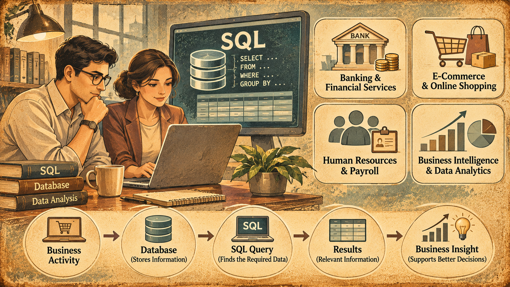

1. Where Is SQL Used in Real Life?
Have you ever ordered something online, transferred money through a banking app or checked your shopping history?
Behind these activities, organizations use database systems to store, manage and retrieve important information.
SQL is one of the languages commonly used to interact with relational databases supporting such applications.
Imagine Ordering a Product Online
You open an online shopping application and purchase a mobile phone.
The application may work with five types of information.
The application's systems manage this information and store it in databases.
SQL can help retrieve order information, check product availability and prepare sales reports.
2. How Do Databases Work?
Relational databases organize information into tables containing rows and columns.
🗂️ Table
A collection of related records, such as employees or orders.
📋 Column
A field describing information, such as name, department or salary.
📝 Row
One individual record stored inside a table.
Example: Employee Database
Imagine an HR department maintaining the following employee records.
| emp_id | emp_name | department | salary |
|---|---|---|---|
| 101 | Ravi | IT | ₹60,000 |
| 102 | Priya | HR | ₹45,000 |
| 103 | Arjun | IT | ₹75,000 |
| 104 | Sneha | Finance | ₹50,000 |
| 105 | Kiran | IT | ₹60,000 |
Here, the table is called employees. It contains four columns and five rows of data.
Now imagine this company has 50,000 employees.
Finding everyone working in the IT department manually would take time. SQL can retrieve the required records.
3. A Simple SQL Example
Business Requirement
The HR department wants to find employees working in the IT department.
SQL Query
SELECT emp_name, department, salary FROM employees WHERE department = 'IT';
Expected Result
| emp_name | department | salary |
|---|---|---|
| Ravi | IT | ₹60,000 |
| Arjun | IT | ₹75,000 |
| Kiran | IT | ₹60,000 |
What Happened?
SQL looked at the employees table and selected only records where the department was IT.
This demonstrates how SQL retrieves specific information from stored data.
4. Real-World Applications Across Industries
SQL supports different business activities across many industries.
Banking and Financial Services
Banks manage customer accounts, payments and financial transactions.
Example Business Questions- How many transactions occurred today?
- What is the total transaction value?
- Which transactions need review?
- What is the monthly transaction volume?
E-Commerce and Online Shopping
Online retailers manage products, orders, customers and inventory.
Example Business Questions- Which products have the highest sales?
- How many orders were placed today?
- Which products are low on stock?
- How many deliveries are pending?
Human Resources and Payroll
HR teams maintain employee, attendance and payroll information.
Example Business Questions- How many employees work in each department?
- How many employees joined this month?
- What is the average departmental salary?
- Which employees work in Hyderabad?
Business Intelligence and Data Analytics
Organizations use analytics systems to understand performance.
Example Business Questions- What is this month's revenue?
- Which region has the highest sales?
- How has performance changed?
- Which business units achieved their targets?
5. How SQL Connects Data to Business Decisions
Let's understand how information becomes useful to a business.
6. Key Takeaway
SQL is a practical language used for working with the structured information that supports everyday business operations.
From banking and online shopping to HR and business intelligence, SQL helps retrieve, organize and analyze important information.
You Now Understand:
- What SQL is and how it evolved.
- Why learning SQL is valuable.
- How SQL supports different careers.
- How SQL is used in real-world applications.
Congratulations!
You've completed the four introductory SQL lessons.
Now it's time to move from understanding SQL to writing your own queries.
← Page 3: SQL Job Market Explore Basic SQL Queries → Back to Homepage